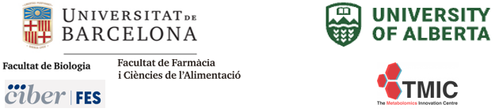

Targeted Metabolomics Data Analysis. Unlocking insights with Machine Learning, AI and Statistics

Overview
Using high-throughput technologies, life science researchers can identify and characterize all the small molecules or metabolites in a given cell, tissue, or organism.
This non-profit course covers a wide range of topics ranging from understanding metabolomics technologies, data collection and analysis, using pathway databases, performing pathway analysis, conducting univariate and multivariate statistics, working with metabolomic databases, and exploring chemical databases.
Hands-on practical tutorials using various data sets and tools will assist participants in learning metabolomics analysis techniques.
Organizers
The course is organized by the Faculty of Biology and Faculty of Pharmacy and Food Sciences of the University of Barcelona, The Metabolics Innovation Center (TMIC) of the University of Alberta and the Frailty and Healthy Ageing-CIBERFES.
David Wishart, University of Alberta, Canadá
Alex Sanchez, University of Barcelona, CIBERFES-ISCIII
Cristina Andres-Lacueva, University of Barcelona, CIBERFES-ISCIII
Xavier Nogués, IMIM-Hospital del Mar, CIBERFES-ISCIII
Pedro Abizanda, Servicio de Salud de castilla la Mancha (SESCAM), CIBERFES-ISCIII
Anna Guadall, University of Barcelona
Miriam Martínez Huélamo, University of Barcelona, CIBERFES-ISCIII
Speakers
The course will be taught by professors:
- David Wishart (University of Alberta, Canada),
- Alex Sanchez-Pla (University of Barcelona, Spain)
- Xavier Nogués (Hospital del Mar, Spain)
- Cristina Andrés-Lacueva ((University of Barcelona, Spain)
Objectives
Learn to correctly design metabolome-focused experiments.
Understand advantages and limitations of metabolomic data analysis.
Present bioinformatics workflows for metabolomic data.
Learn how to select and apply statistics and Machine learning to undertake rigorous data analysis.
Visualize datasets to gain intuitive insights into the composition and/or activity of their metabolome
Contents
Fundamentals of metabolomics (David Wishart)
Targeted metabolomics with MEGA and LC-Autofit (David Wishart)
Statistics for metabolomics: From tests to projections. (Alex Sánchez)
Metabolomics data analysis with MetaboAnalyst (David Wishart and Alex Sanchez)
Machine learning and Artificial Intelligence applied to metabolomics (Alex Sánchez)
Pathway Analysis and Biological Significance (Alex Sánchez)
Target Audience
This course is intended for graduate students, post-doctoral fellows, clinical fellows and investigators who are interested in learning about both bioinformatic and cheminformatic tools to analyze and interpret metabolomics data.
Registration, Dates and Number of participants
Number of participants: 25
Duration: 11th – 14th June 2024
Registration fee: 60 Euros (+21% VAT) for academic researchers (10% discount if agreed) 500€ (+21% VAT) for industry. It only includes participation in workshop and coffee breaks. Materials will be provided online
There will be a candidate pre-selection in order to warrant everybody the same possibilities to participate in the course. Candidates need fill the pre-registration survey below.
Pre-selection goes from May the 2nd to May the 15th. PRE-REGISTRATION SURVEY
Participants will be selected Candidates will be selected based on availability of places, CV and motivation statement.
Accepted candidates will be notified by May the 21st.
- Complete this link after acceptance notification: REGISTRATION LINK
Prerrequisites
The attendants are expected to be familar with at least one language such as R or Python for data analysis.
You will require your own laptop computer. Minimum requirements: 1024×768 screen resolution, 2.4GHz CPU, 8GB RAM, 100GB free disk space, recent versions of Windows, Mac OS X or Linux (Most computers purchased in the past 3-4 years likely meet these requirements).
There workshop requires participants to complete pre-workshop tasks and readings, to be available form this website soon.
Venue
Facultat de Biologia de la Universitat de Barcelona. Classrooms available soon.